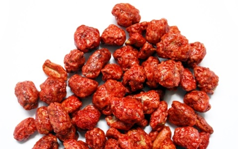

                              <!-- Mani Dulce Garrapiñado -->
      <div class="grid">
                <div class="separator"></div>
                <div class="row">
                    <div class="leftCol"></div>
                    <div class="rightCol">
                        <div class="productTitle">Mani Garrapi&ntilde;ado</div>
                        <div class="productMinDesc">Mani dulce garrapi&ntilde;ado. Producto de: Venezuela.</div>
                        <div class="productPrices">
                        <!-- ModificarPrecioProducto -->
                            <div class="priceMax">Bsf 49.000/Kg</div>
                        <!-- ModificarPrecioProducto -->
                            <div class="line">
                                 <div class="Cantidad">(Pide 400gr)</div>
                                 <div class="BsfvsKilo"> &nbsp; 4% Descuento &nbsp; &darr;</div>
                            </div>
                            <div class="line">
                                 <div class="Cantidad">(Pide 700gr)</div>
                                 <div class="BsfvsKilo"> &nbsp; 6% Descuento &nbsp; &darr;</div>
                            </div>
                            <div class="line">
                                 <div class="Cantidad">(Pide 1 Kg)</div>
                                 <div class="BsfvsKilo"> &nbsp; &nbsp; 9% Descuento &nbsp; &darr;</div>
                            </div>

                        </div>
                    </div>
                </div>
      </div>